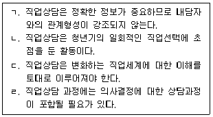
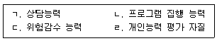
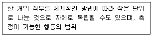
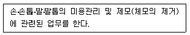
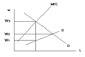
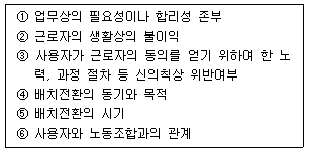

직업상담사-1급(구) (2005-09-04 기출문제)
1과목: 고급직업상담·심리학
1. 경력개발 프로그램에 대한 설명으로 틀린 것은?
- 대학생을 주 대상으로 한다.
- 조직의 특정 목표달성을 강조한다.
- 직장인들의 특정 경력목표 달성을 돕는다.
- 직장인들을 주 대상으로 삼는다.
(정답률: 알수없음)

2. 개인의 욕구와 직업선택의 행동의 관계에 초점을 두고, 직업을 서비스직, 비즈니스직, 단체직 기술직, 옥외활동직, 과학직, 문화직, 예술직 등의 여덟 가지 직업군으로 분류하는 체계를 개발한 사람은?
- Holland
- Roe
- Super
- Parsons
(정답률: 알수없음)
3. 해결중심 상담에 대한 동기수준에 따라 분류한 내담자의 유형에 대한 설명으로 올바른 것은?
- 해결중심상담에서는 방문자, 불평자, 실험자, 고객 등 네가지 유형으로 구분한다.
- 방문자는 불평자나 고객보다 상담에 대한 동기가 가장 높은 사람들을 지칭한다.
- 불평자란 상담서비스에 대한 불평보다는 자기 주변의 다른 사람이 문제가 많다고 불평하는 사람이다.
- 실험자란 여러 종류의 상담을 받으면서 가장 적합한 서비스를 실험을 통해 찾는 사람을 지칭한다.
(정답률: 알수없음)
4. 다음 중 직업상담의 기본 원리에 해당하는 것은?

- ㄱ, ㄴ
- ㄴ, ㄷ
- ㄷ, ㄹ
- ㄱ, ㄹ
(정답률: 알수없음)
5. 상담효과의 검증 및 측정을 위한 연구설계와 관련된 설명으로 옳은 것은?
- 집단간 실험단계 : 상담을 받은 집단과 그렇지 않은 집단간의 비교를 통해 상담의 효과를 측정
- 단일 피보험자 실험단계 : 검사효과, 실험의 효과, 상호작용 효과 등을 따로 구분하여 산출함으로써 순수한 상담의 효과만을 측정
- 모의상담연구 : 단일 피보험자를 대상으로 반복 측정된 상담효과를 시계열적으로 산출
- 솔로몬 4집단 설계 : 상담의 복잡하고 불규칙한 상호작용과 의사소통을 간략한 가설, 이론, 법칙 등으로 단순화시켜 상담의 효과를 산출
(정답률: 알수없음)
6. 다음 중 상담의 이론과 그 이론이 표방하는 기본적 목표를 바르게 짝지은 것은?
- 정신분석적 상담 : 무의식적 갈등을 의식화시켜 개인의 성격구조를 재구성함.
- 인간중심적 상담 : 학습된 구체적인 부적응 행동을 없애고 보다 효과적이고 바람직한 행동을 새롭게 학습시킴.
- 행동주의적 상담 : 상호신뢰적인 분위기를 조성하여 내담자가 자신의 내면세계를 이해하고 자신의 문제를 파악하도록 함.
- 현실주의적 상담 : 비합리적인 관념과 생각을 합리적이고 생산적인 것으로 대치시킴.
(정답률: 알수없음)
7. 직업상담사의 역할에 대한 설명으로 옳지 않은 것은?
- 과제물 이행, 직업계획 작성 등의 경험을 통해 내담자에게 직업에 대한 탐색활동을 장려한다.
- 인간관계 기술을 훈련시킴으로써, 직장에서의 잠재적 갈등을 해결할 수 있도록 돕는다.
- 직업과 삶에서의 다른 역할들 사이의 통합을 이해하고 수용할 수 있도록 돕는다.
- 상담자 자신이 직업종류의 선호에 대한 가치관을 정립함으로써, 내담자의 직업 선호에 판단기준을 제시한다.
(정답률: 알수없음)
8. 저항에 대한 설명으로 틀린 것은?
- 모든 저항은 반드시 극복되어야 한다.
- 무의식적 갈등이 의식되는 것에 방어하는 것.
- 치료적 노력에 반대되는 작용을 하는 방어.
- 저항의 동기는 상담과정에서 경험되는 불쾌한 정서를 피하고자 하는 것.
(정답률: 알수없음)
9. 다음 중 현실치료에서 주장하는 욕구 중 성격이 다른 것은?
- 생존의 욕구
- 즐거움의 욕구
- 소속의 욕구
- 힘의 욕구
(정답률: 알수없음)
10. 컴퓨터 보조 진로지도 시스템의 장점으로 적절하지 않은 것은?
- 다른 경로로 습득하는 정보보다 진로 정보가 방대하고 신뢰할 수 있기 때문에 진로상담자를 대체하고 있다.
- 다양한 연령의 학생들이 컴퓨터 보조 진로지도 시스템을 좋아하기 때문에 활용성이 높다.
- 컴퓨터 보조 진로지도 시스템을 활용하면 시간과 노력을 절감하고 효율적으로 일을 처리할 수 있다.
- 컴퓨터 보조 진로지도 시스템은 이용자 자신에 대한 이해와 직업 세계에 대한 이해를 높여 주게 된다.
(정답률: 알수없음)
11. 직업상담사의 행정실무에 대한 옳은 설명은?
- 회계업무는 회계전문가가 전담해야 하므로 직업상담사는 감독만 한다.
- 재정확보를 위한 노력은 기관장의 주요 역할이므로 직업상담사는 집행에만 관여한다.
- 상담에 대한 홍보 활동도 주요 업무 내용이 된다.
- 구직자에 대한 취업 알선이 주 업무이므로 청소년들은 상담 대상에서 제외된다.
(정답률: 알수없음)
12. 직업상담사의 직업상담 행정 업무 평가 내용으로 적합하지 않은 것은?
- 취업 실적
- 재정의 배분이나 지원
- 상담자의 기술이나 기법
- 상담소의 인력 배치
(정답률: 알수없음)
13. “사람들은 생각하는 대로 느끼고 행동한다”는 말로 대변할 수 있는 심리치료는?
- 실존치료
- 인간중심치료
- 합리정서행동치료(REBT)
- 현실치료
(정답률: 알수없음)
14. 직업상담과정의 일반적 단계를 순서대로 바르게 나타낸 것은?
- 상담자와 내담자의 관계형성 및 구조화 - 문제의 진단 - 목표설정 - 중재 - 평가
- 문제의 진단 - 상담자와 내담자의 관계형성 및 구조화 - 목표설정 - 중재 - 평가
- 목표설정 -문제의 진단 - 상담자와 내담자의 관계형성 및 구조화 - 중재 - 평가
- 평가- 상담자와 내담자의 관계형성 및 구조화 - 문제의 진단 - 목표설정 - 중재
(정답률: 알수없음)
15. 다음 주 직업상담의 목표에 해당하지 않는 것은?
- 직업문제 인식
- 자신에 대한 이상적인 이미지 형성
- 의사결정 능력 배양
- 실업 등 직업에 대한 위기관리 능력 배양
(정답률: 알수없음)
16. 발달적 직업상담 접근에서 직업성숙도 검사를 활용하여 얻게 되는 장점과 거리가 먼 것은?
- 직업상담 전략을 수립
- 태도적 측면과 인지적 측면을 이해
- 연령과 학력에 따른 발달단계 파악
- 부적응적 학습원인을 규명
(정답률: 알수없음)
17. 경력개발 프로그램 담당자에게 요구되는 능력을 바르게 설명한 것은?

- ㄱ
- ㄱ, ㄴ
- ㄱ, ㄴ, ㄷ
- ㄱ, ㄴ, ㄷ, ㄹ
(정답률: 알수없음)
18. 집단상담의 장점이 아닌 것은?
- 집단성원들 간의 쉽게 소속감과 동료의식을 발전시킬 수 있다.
- 넓은 범위의 다양한 성격의 소유자와 접할 수 있는 기회를 준다.
- 집단적인 힘이 작용하기 때문에 심각한 성격적 장애를 경험하고 있는 사람들에게 효과적이다.
- 두려움없이 새로운 행동을 검증해 볼 수 있는 기회를 제공한다.
(정답률: 알수없음)
19. 내담자가 자신의 생각과 느낌을 탐색하도록 돕는데 적합한 질문은?
- 암시형 질문
- 개방형 질문
- 긍정형 질문
- 수용형 질문
(정답률: 알수없음)
20. 다음 중 직업상담과 유사개념간의 관련성에 대한 설명 중 옳은 것은?
- 진로는 개인이 일생동안 추구해온 일의 총칭이며, 직업은 주어진 시점에서 이루어진 특수한 일을 지칭한다.
- 직업상담과 진로상담의 가장 중요한 차이는 대상의 차이이다.
- 직업지도는 직업적응, 전환, 은퇴 등의 과정에서 발생하는 개인의 문제를 예방, 지원, 개입하는 과정이다.
- 산업상담은 노조문제, 노조와 사용자간의 갈등을 해결하는 상담활동이다.
(정답률: 알수없음)
21. 어떤 적성검사가 쓸모 있으려면 지원자를 모두 선발했을 때 적성검사의 점수가 높은 사람들은 잘 적응하고 성과도 높은 반면에 점수가 낮은 사람들은 잘 적응하지 못하고 성과도 낮아야 한다. 그러기 위해서는 어느 타당도가 높아야 하는가?
- 예언 타당도
- 구성 타당도
- 동시 타당도
- 안면 타당도
(정답률: 알수없음)
22. 직업훈련이 언제나 긍정적인 효과를 가져오는 것은 아니다. Rynes에 따르면, 사실적 직무소개(realistic job preview) 기법은 종종 이직과 같은 부정적인 결과를 초래하기도 하는데, 이는 직무 특성에 따라 달라지는 것으로 알려져 있다. 사실적 직무소개 기법의 효과를 좌우하는 직무 특성은?
- 직무 개방성
- 직무 순환성
- 직무 복잡성
- 직무 건전성
(정답률: 알수없음)
23. Herzberg의 동기이론에서 위생욕구에 속하지 않는 것은?
- 회사정책
- 대인관계
- 작업환경
- 자아성취
(정답률: 알수없음)
24. 발달적 입장에서 직업선택 이론을 설명하는 긴즈버그(Ginzberg)가 말하는 진로발달 3단계에 해당하지 않는 것은?
- 환상기 단계
- 잠정기 단계
- 확립기 단계
- 현실기 단계
(정답률: 알수없음)
25. 종업원의 선발, 훈련, 직무 평가, 수행 평가 등의 인사관련 프로그램을 설계하기 위해 제일 먼저 실시하는 절차는?
- 적성검사
- 직무분석
- 직무명세서
- DOT
(정답률: 알수없음)
26. 다음 중 홀랜드(Holland) 진로탐색검사에 나오는 직업적 성격유형의 종류가 아닌 것은?
- 실재형
- 예술형
- 기업형
- 외향형
(정답률: 알수없음)
27. 백분위 점수를 바르게 설명한 것은?
- 백분위는 개인이 표준화 집단에서 차지하는 절대적인 위치를 가리킨다.
- 백분위는 성인과 아동에게도 똑같이 이용할 수 있다.
- 성격변인을 측정하는 검사에는 적합하지 않다.
- 백분위가 낮아질수록 개인성적은 더욱 좋다.
(정답률: 알수없음)
28. 신뢰도와 타당도에 대한 설명으로 옳은 것은?
- 타당도가 높으면 신뢰도는 낮다.
- 신뢰도는 타당도를 보장하지 않는다.
- 신뢰도가 높으면 타당도가 낮다.
- 신뢰도가 높으면 타당도도 높다.
(정답률: 알수없음)
29. 직무만족과 관련된 행동이 아닌 것은?
- 인간관계
- 이직
- 결근
- 직무수행
(정답률: 알수없음)
30. Alderfer ERG 이론의 하위욕구 중 Maslow 욕구위계이론의 생리와 안전욕구에 해당되는 욕구는?
- 생존
- 관계
- 성장
- 성취
(정답률: 알수없음)
31. 개인의 관점에서 경력관리에 대한 설명으로 옳지 않은 것은?
- 효율적인 경력관리는 구성원에게 높은 기대를 유지하게 하는 것이다.
- 효율적인 경력관리는 구성원에게 자유와 자율성을 얻게 해준다.
- 개인이 자신의 독특한 경력가치를 충족시키기 위해서 다양한 유형의 경력 지향성을 유지해야 한다.
- 직업과 관련된 성유형이 약화됨에 따라 여성과 남성에게 경력 선택의 폭을 넗힐 수 있는 경력관리가 되어야 한다.
(정답률: 알수없음)
32. 다음 중 심리검사의 하위 영역별 문항의 동질성을 나타내는 것은?
- 공인타당도
- 검사-재검사 신뢰도
- 내적일치도
- 내용타당도
(정답률: 알수없음)
33. 독립변인과 종속변인에 대한 설명으로 옳은 것은?
- 독립변인은 변인에 할당한 수치들이 그 자체로서 양적인 차이를 나타낼 수 있는 변인이며 종속변인은 수치의 차이가 질의 차이를 나타내는 변인을 말한다.
- 독립변인은 어떤 다른 변인의 원인이 되는 변인이며, 종속변인은 그 독립변인의 결과가 되는 변인이다.
- 독립변인은 무한히 많은 값을 취하는 변인이고 종속변인은 한정된 수치만을 할당할 수 있는 변인이다.
- 독립변인은 그 변인의 값을 통해 어떤 다른 변인의 값을 예언하는 질적변인이고 종속변인은 이 독립변인으로 예측하고자 하는 양적변인을 말한다.
(정답률: 알수없음)
34. 직무분석에 대한 설명으로 옳지 않은 것은?
- 직무분석은 인사선발을 위한 도구로 활용된다.
- 직무분석은 종업원의 동기나 만족을 고양시키기 위해 설계되어진다.
- 직무분석은 실제 업무를 수행하는 종업원의 행동만을 기준으로 측정한다.
- 직무분석은 업무수행에 필요한 작업요건을 명세화하기 위한 과정이다.
(정답률: 알수없음)
35. 진로발달에 관한 이론 중에서 능력에 대한 자기평가, 즉 자신감이 개인의 직업선택 및 만족에 영향을 미친다는 가정은 다음 중 어느 이론에 기초하는가?
- 자기효능감 이론
- 진로발달이론
- 인지적 정보처리 이론
- 진로선택이론
(정답률: 알수없음)
36. 직업과 관련된 9가지 생애형태 분석에 있어서 “노동현장×업무(일) 지향” 형태의 특징이 아닌 것은?
- 일요일이나 휴일 등은 가능한 한 사회활동에 쓰고 싶어 한다.
- 유급휴가는 거의 쓰지 않는다.
- 의욕과 즐거움을 업무 속에서 찾고 싶어 한다.
- 정해진 근무시간 이후에도 잔업 등 업무를 한다.
(정답률: 알수없음)
37. 심리검사 결과를 해석할 때 고려해야 할 원칙을 바르게 설명한 것은?
- 검사결과는 절대적인 것이 아니다.
- 피검자의 검사결과와 실제 생활이 다를 때는 검사 결과를 우선적으로 생각한다.
- 검사시 행동은 해석할 때 언급하지 않는 것이 좋다.
- 검사결과는 개인의 특수성을 규정 짓는다.
(정답률: 알수없음)
38. 직무분석 자료의 특성으로 옳지 않은 것은?
- 직무분석은 분석시점에서 가장 최신 정보이다.
- 직무분석자료는 가공되지 않은 원자료이다.
- 직무분석 자료는 여러 가지 용도로 활용되는 다목적성이 있다.
- 직무분석자료는 조사대상 특정 기업에 대한 주관적 특성이 강하다.
(정답률: 알수없음)
39. 자기효능감은 네가지 종류의 학습경험을 거쳐 발전된다. 네가지에 속하지 않는 것은?
- 개인적인 수행성취
- 정신적 상태와 반응
- 간접경험
- 사회적 설득
(정답률: 알수없음)
40. 다음 중 일과 여가의 관계에 대한 가설이 해당되지 않는 것은?
- 전이(spill-over)가설
- 보상(compensation)가설
- 분리(segmentation)가설
- 효능(efficacy)가설
(정답률: 알수없음)
2과목: 고급직업정보론(노동시장론 포함)
41. 노동부에서 제공하는 근로자학자금융자에 관한 설명으로 틀린 것은?
- 고용보험 피보험자를 대상으로 한다.
- 지원되는 등록금의 범위에는 입학금, 수업료, 기성회비 등을 포함한다.
- 대학원 박사과정은 대부대상자에서 제외된다.
- 특수대학원 석사과정도 신청할 수 있다
(정답률: 알수없음)
42. 한국표준직업분류(2000)상 대분류 4에 해당되는 것은?
- 서비스 종사자
- 기술공 및 준전문가
- 전문가
- 판매종사자
(정답률: 알수없음)
43. 한국표준산업분류(2000)의 대분류와 세세분류가 잘못 짝지워진 것은?
- 기타 공공, 수리 및 개인서비스업-이용업
- 숙박 및 음식점업-일반유흥 주점업
- 제조업-도축업
- 통신업-컴퓨터시스템 설계 및 자문업
(정답률: 알수없음)
44. 신규구인인원 100건, 신규구직인원 200건, 취업건수 50건, 알선건수 80건일 때 구인배율, 충족율, 알선율은 각각 얼마일까?
- 0.5, 50%, 40%
- 0.5, 40%, 50%
- 1, 50% 40%
- 1, 40%, 50%
(정답률: 알수없음)
45. 다음 중 노동부에서 작성하는 통계자료가 아닌 것은?
- 고용동향전망조사
- 한국노동패널
- 소규모사업체근로실태조사
- 노동력수요동향조사
(정답률: 알수없음)
46. 미래 산업구조의 특성으로 보기 어려운 것은?
- 지식기반 산업의 발달
- 표준화된 제품산업의 발달
- 정보통신 산업의 발달
- 고부가가치산업의 발달
(정답률: 알수없음)
47. 한국직업사전(2003)의 DPT에서 0-0-0이 의미하는 것은?
- 조정-자문-설치
- 조정-협의-유지
- 종합-협의-유지
- 종합-자문-설치
(정답률: 알수없음)
48. 국가기술자격등급 중 응시하고자 하는 종목에 관한 기술의 기초이론지식 또는 숙련기능을 바탕으로 복합적인 기능업무를 수행할 수 있는 능력의 유무를 평가하는 등급은?
- 기능장
- 기능사
- 기사
- 산업기사
(정답률: 알수없음)
49. 다음은 직무분석과 관련하여 무엇에 관한 설명인가?

- 직무
- 책무
- 작업
- 작업요소
(정답률: 알수없음)
50. 『광공업, 건설업 분야에서 관련된 지식과 기술을 응용하여 금속을 성형하고 각종 기계를 설치 및 정비한다. 또한 섬유, 수공예 제품과 목재, 금속 및 기타 제품을 가공한다』가 속하는 대분류의 직종이 아닌 것은?
- 광원
- 석재 절단 및 조각 종사자
- 주물주조기 조작원
- 조적원
(정답률: 알수없음)
51. 통계청 한국표준직업분류의 특수분류 중 우리나라 전문ㆍ기술인적자원분류의 분류분야가 아닌 것은?
- A. 자연과학
- B. 인문ㆍ사회과학
- C. 예체능
- D. 사범
(정답률: 알수없음)
52. 특정 직업에 일자리가 생기는 것은 해당 분야의 사업규모가 확대되거나 혹은 대체 수요에 의해 발생할 수 있다. 다음 중 대체 수요를 제공하는 원천이 아닌 것은?
- 근무환경에 불만족하여 퇴사하고 다른 직업을 선택하는 경우
- 육아에 대한 부담 때문에 직장에서 가정으로 돌아가는 경우
- 정부의 정책변화에 의해 일자리가 발생했을 경우
- 정년퇴직을 하고 은퇴하는 사람이 있을 경우
(정답률: 알수없음)
53. 경제활동인구조사에 대한 설명으로 틀린 것은?
- 통계청 사회통계국 인구조사과에서 작성한다.
- 과거 노동력조사라는 명칭으로 지방행정기관을 통하여 조사실시하였다.
- 매월 전국의 약 30,000가구를 대상으로 조사된다.
- 조사대상에서 공익근무요원, 교도소 수감자 등은 제외된다.
(정답률: 알수없음)
54. 직업정보 가공시 유의해야 할 사항이 아닌 것은?
- 정보의 생명력을 측정하여 활용방법을 선정하고 사용자의 동기를 부여할 수 있는 효과를 부가한 상태로 제공될 수 있도록 구상하여야 한다.
- 직업은 전문적인 것이므로 가능하면 전문적인 용어를 사용하여 가공하여야 한다.
- 처리된 자료를 선정해 정보관리로 전환시켜 정보를 공유하는 방법을 강구하고 어떤 자료를 어떻게 저장할 것인가에 관해 설계하는 과정이 있어야 한다.
- 직업정보는 활용하기 쉬운 형태로 보존하거나 내용을 요약하거나 적절한 형태로 정리하여 능동적으로 활용이 가능하도록 편집, 가공하는 것이 중요하다.
(정답률: 알수없음)
55. Job Map의 근간이 되는 한국고용직업분류에 대한 설명으로 틀린 것은?
- 10진법 중심의 분류이다.
- 직능유형(skill type) 중심이다.
- 대분류보다는 중분류 중심체계이다.
- 대규모 조사를 통한 경험적 데이터에 근거하고 있다.
(정답률: 알수없음)
56. 한국직업전망(2003)에서 지식에 대한 설명으로 옳지 않은 것은?
- 경영 및 행정 - 사업운영, 기획, 자원배분, 인적자원관리, 리더십, 생산기법에 대한 원리 등 경영 및 관리에 관한 지식
- 경제와 회계 - 돈의 흐름, 은행업무, 그리고 재무자료의 보고와 분석과 같은 경제 및 회계원리에 관한 지식
- 심리 - 개인의 신상 및 경력 혹은 정신적 어려움에 관한 상담을 하는 절차나 방법 혹은 원리에 대한 지식
- 공학과 기술 - 다양한 물건을 만들고 설계하거나 서비스를 제공하기 위해 필요한 공학적인 원리, 기법, 장비 등을 실제로 적용시키는 지식
(정답률: 알수없음)
57. 다음 중 고용정보워크넷에서 이력서 작성법, 자기소개서 작성법 등의 정보를 제공하고 있는 메뉴는?
- 취업가이드
- 직업지도프로그램
- 직업상담
- 자료탐색
(정답률: 알수없음)
58. 한국직업사전(2003)에서 다음과 같은 직무개요에 해당되는 직업은?

- 메이크업아티스트
- 미용사
- 손톱미용사
- 피부미용사
(정답률: 알수없음)
59. 고용정보 워크넷(work-net)의 일자리 간편 검색시 제공하는 내용이 아닌 것은?
- 사업체명
- 임금(만원)
- 등록일
- 정보 조회수
(정답률: 알수없음)
60. 직업훈련의 훈련과정에 따른 분류에 해당되는 것은?
- 통신훈련
- 현장훈련
- 집체훈련
- 전직훈련
(정답률: 알수없음)
61. 노동조합의 조합원 여부에 관계없이 사용자가 자유로이 고용할 수 있으나 채용 후에는 일정기간 내에 반드시 노동조합에 가입하여야 하는 제도는?
- 클로즈드 숍(closed shop)
- 유니온 숍(union shop)
- 오픈 숍(open shop)
- 혼합 숍(mixed shop)
(정답률: 알수없음)
62. 총인구 2,500만명 중 15세 이상 인구가 2,000만명이다. 취업자가 1,500만명, 실업자가 100만명이라면 실업률과 경제활동참가율은 각각 얼마인가?
- 5%, 64%
- 5%, 80%
- 6.25%, 64%
- 6.25%, 80%
(정답률: 알수없음)
63. 고임금이 높은 생산성을 가져온다는 효율임금(efficiency wage)이론에 대한 설명으로 옳지 않은 것은?
- 고임금은 근로자의 직장상실 비용을 증대시켜서 근로자로 하여금 작업 중 태만하지 않고 열심히 일하게 한다.
- 고임금기업의 근로자는 고임금을 사용자가 주는 일종의 선물로 간주하고 이러한 은혜에 보답하기 위해 작업노력을 증대시킨다.
- 고임금에 따라 우량기업이라는 기업의 명예와 신용이 높아지면, 신규근로자의 채용시 보다 양질의 근로자를 고용할 수 있다.
- 고임금은 근로자의 사직을 증가시켜서 신규근로자의 채용 및 훈련비용을 증가시킨다.
(정답률: 알수없음)
64. 다음 중 유능한 노동자가 자신의 유능성을 내보이지 않고, 오히려 최소한의 기준만 충족시키면서 빈둥거리는 이유를 설명하고 있는 것은?
- 주인-대리인 효과
- 무임승차 효과
- 자기선택 효과
- 톱니효과
(정답률: 알수없음)
65. 최근 경기 불황으로 많은 구직자들이 열심히 일자리를 찾다가, 결국 찾지 못하자 구직활동을 포기하는 사람들이 늘고 있다. 이러한 추세가 지속되어 나타나는 결과는?
- 실업률일 증가한다.
- 실업률이 줄어든다.
- 실업율은 불변이다.
- 경제활동참가율이 증가한다.
(정답률: 알수없음)
66. 청소년 근로자의 경우 상대적으로 자진사직할 확률이 높다. 다음 중 그 이유로 가장 타당한 것은 어느 것인가?
- 청소년의 직업탐색에 대한 수익이 상대적으로 낮기 때문이다.
- 청소년의 직업탐색으로 인한 상실소득이 상대적으로 높기 때문이다.
- 청소년의 직업탐색 비용이 상대적으로 낮기 때문이다.
- 청소년의 실업률이 상대적으로 낮기 때문이다.
(정답률: 알수없음)
67. 생산성 임금제 하에서 물가가 5% 상승하고 생산성이 2% 하락하였다면 명목임금은 얼마나 상승하여야 하는가?
- 3%
- 5%
- 7%
- 9%
(정답률: 알수없음)
68. 다음 중 기혼여성의 경제활동차가를 촉진하는 요인에 해당되지 않는 것은?
- 남편의 고소득
- 탁아시설의 발달
- 자녀수의 감소
- 파트타임 고용시장의 발달
(정답률: 알수없음)
69. 어떤 직업이 다른 직업에 비하여 노동강도가 심하거나 열악한 환경에서 작업해야 하는 경우 더 높은 임금을 지급하기 때문에 임금격차가 발생한다고 보는 이론은?
- 생산성 격차설
- 보상 격차설
- 노동시장 분단설
- 노동조합 효과설
(정답률: 알수없음)
70. 다음 중 기업의 단기노동수요에 관한 설명으로 맞는 것은?
- 생산물시장으로부터의 파생수요이다.
- 한계생산력체증의 법칙이 적용된다.
- 임금이 상승하면 고용량은 증가한다.
- 수요곡선의 기울기는 항상 일정하다.
(정답률: 알수없음)
71. 다음 중 노동시간의 결정과 임금과의 상관관계를 올바르게 기술한 것은?
- 임금이 상승하면 개별 근로자의 노동시간은 당연히 증가한다.
- 임금이 상승할 때 대체효과가 소득효과를 압도하면 노동시간은 증가한다.
- 임금이 상승할 때 대체효과가 소득효과를 압도하면 노동시간은 감소한다.
- 임금이 상승하면 개별 근로자의 노동시간은 반드시 감소한다.
(정답률: 알수없음)
72. 다음 그림은 수요독점적인 노동시장에서의 임금과 고용의 결정을 보인 것이다. 이 시장에서 이제 노동조합이 조직되어 노동시장이 쌍방독점 상태로 된다고 하자. 임금상승과 고용증가를 동시에 달성할 수 있는 임금구간은?

- W1 이하구간
- W1-W2구간
- W2-W3구간
- W3 이상구간
(정답률: 알수없음)
73. 다음은 단체교섭이론 중 그 설명이 올바르지 않은 것은?
- 힉스에 의하면 사용자의 양보곡선과 노조의 저항곡선이 만나는 점에서 파업기간과 노사 양측이 수락하는 타협된 임금수준이 결정된다.
- 카터-챔벌린이론에 의하면 노사가 상대방의 제안을 거부할 때 발생하는 비용과 수락했을 때의 비용을 고려해 교섭력 또는 교섭태도가 결정됨을 설명하고 있다.
- 매브리의 계약영역모형에 의하면 사용자의 수락임금이 노조의 최종 요구임금보다 크면 이를 양(+)의 계약영역이라 정의하고 이 경우 파업할 확률이 커짐을 의미한다.
- 전략적 파업으로 인해 적정파업기간이 연장될 수도 있다.
(정답률: 알수없음)
74. 여성 근로자가 특정 직종에 집중되어 여성 근로자 간의 경쟁으로 여성의 낮은 임금이 유지되는 현상을 무엇이라 하는 가?
- 혼잡효과(crowding effect)
- 직종효과(occupational effect)
- 임금효과(wage effect)
- 경쟁효과(competition effect)
(정답률: 알수없음)
75. 노동수요의 탄력성에 대한 설명으로 틀린 것은?
- 생산물의 수요가 생산물의 가격 변화에 민감하게 반응할수록 노동수요가 탄력적으로 된다.
- 총생산비 중 노동비용이 차지하는 비중이 클수록 노동수요가 탄력적으로 된다.
- 생산에서 노동을 다른 요소로 대체할 수 있는 가능성이 작을수록 노동수요가 비탄력적으로 된다.
- 노동 이외의 생산요소의 공급이 탄력적일수록 노동수요가 비탄력적으로 된다.
(정답률: 알수없음)
76. 지식기반사회가 되면서 근로자 경영참가의 필요성이 강조되고 있다. 그 논리로서 가장 적합한 것은?
- 경영참가로 경쟁이 촉진되면 생산성이 향상된다.
- 근로자들의 권한 증가로 정보의 비대칭성이 감소한다.
- 물적자산과 마찬가지로 인적자본의 재산권이 존중되면 역선택이 감소한다.
- 팀작업을 통한 경영참가로 숙련형성이 이루어지면 주인-대리인 문제가 감소한다.
(정답률: 알수없음)
77. 이쉔펠터와 존슨(Ashenfelter and Johnson)의 파업모형에 관한 설명으로 틀린 것은?
- 노조원과 노조지도자들간의 목적함수가 다르다는 점에 초점을 두고 있다.
- 노조지도부와 경영자들은 암묵적으로 노조원에게 손실을 주는 방향으로 결탁한다.
- 노조지도부는 파업이 임금인상에 도움이 되지 않으면 파업을 권고하지 않는다고 가정한다.
- 노조원들은 협상과정을 알지 못하고 있지만, 경영자들은 노조원들의 저항곡선을 잘 알고 있다고 가정한다.
(정답률: 알수없음)
78. 다음 중 수요부족 실업에 해당하는 것은?
- 경기적 실업
- 마찰적 실업
- 구조적 실업
- 계절적 실업
(정답률: 알수없음)
79. 근로자의 경영참여는 전략적 수준, 기능적 수준, 작업장 수준에서 이루어진다. 다음중 기능적 수준에서의 경영참여에 해당되는 것은?
- 근로자대표의 이사회 참가
- 노사협의회
- 품질분회(QC)
- 자율작업팀
(정답률: 알수없음)
80. 다음 중 실질임금산정에 중요한 의미를 가지는 것은?
- 소비자물가지수
- 도매물가지수
- GNP 디플레이터
- 지니계수
(정답률: 알수없음)
3과목: 노동관계법규
81. 장애인고용에 대한 설명으로서 틀린 것은?
- 사업주는 근로자가 장애인이라는 이유로 채용, 승진 등에 있어서 차별대우하는 것은 금지된다.
- 국가 및 지방자치단체는 중증장애인 및 여성장애인에 대한 고용촉진 및 직업재활을 중시하여야 한다.
- 노동부장관은 장애인을 고용한 사업주에 대하여 의무고용률 등을 참고로 하여 고용장려금을 지급하여야 한다.
- 장애인 의무고용의 적용을 받는 사업주로서 100인 이상의 근로자를 고용하는 사업주가 의무고용률에 미달하는 장애인을 고용하는 경우에는 노동부장관에게 장애인고용부담금을 납부하여야 한다.
(정답률: 알수없음)
82. 국가가 고용정책기본법상 근로자 등의 고용촉진의 지원을 위하여 해야 할 사항이 아닌 것은?
- 여성의 고용촉진의 지원
- 고령자 등의 고용촉진의 지원
- 비정규직 대책과 차별시정을 위한 지원
- 청소년의 고용촉진의 지원
(정답률: 알수없음)
83. 다음 중 배치전환(전보)처분 등이 권리남용에 해당하는지를 판단할 때 기준이 될 수 있는 것은 모두 몇 개인가?

- 3개
- 4개
- 5개
- 6개
(정답률: 알수없음)
84. 근로기준법상 개념정의가 틀린 것은?
- 근로계약이라 함은 근로자가 사용자에게 근로를 제공하고 사용자는 이에 대하여 임금을 지급함을 목적으로 채결된 계약을 말한다.
- 사용자라 함은 사업주 또는 사업경영담당자 기타 근로자에 관한 사항에 대하여 사업주를 위하여 행위하는 자를 말한다.
- 임금이라 함은 사용자가 근로의 대상으로 근로자에게 임금, 봉급 기타 어떠한 명칭으로든지 지급하는 일체의 금품을 말한다.
- 근로자라 함은 직업의 종류를 불문하고 임금ㆍ급료 기타 이에 준하는 수입에 의하여 생활하는 자를 말한다.
(정답률: 알수없음)
85. 장애인 고용촉진 및 직업재활법은 여러 관계자에 대하여 강제적인 의무 또는 노력의무를 부과함으로써, 장애인의 고용촉진 및 직업재활을 도모하고 있다. 다음 연결내용 중 옳지 않은 것은?
- 사업주 - 장애인이 가진 능력을 정당하게 평가하여 고용의 기회를 제공함과 동시에 적정한 고용관리를 행할 의무
- 국가 및 지방자치단체 - 장애인중 정상적인 작업조건하에서 일하기 어려운 장애인을 위하여 특정한 근로환경을 제공하고 그 근로환경에서 일할 수 있도록 보호고용을 실시하여야 할 의무
- 보건복지부장관 - 장애인의 고용촉진 및 직업재활을 위한 기본계획을 수립하여야 할 의무
- 장애인 - 직업인으로서의 자각을 가지고 스스로의 능력의 개발ㆍ향상을 도모하여 유능한 직업인으로서 자립하도록 노력하여야 할 의무
(정답률: 알수없음)
86. 현행 남녀고용평등법이 동일한 임금을 지급하여야 하는 동일한 사업내의 동일가치의 노동의 판단기준을 h명시하고 있지 않은 것은 ?
- 기술
- 노력
- 책임
- 고용형태
(정답률: 알수없음)
87. 근로자직업능력개발법상에 공공직업능력개발훈련시설의 장이 설치ㆍ운영할 수 있는 특별훈련과정에 해당되지 아니한 것은?
- 장애인, 고령자 및 북한이탈주민 등 취업이 어려운 자를 위한 직업능력개발훈련과정
- 비진학청소년 등을 위한 양성훈련과정
- 개별사업주가 실시하기 쉬운 직업능력개발훈련과정
- 중소기업 필요인력 양성과정 및 중소기업 근로자를 위한 직업능력개발훈련과정
(정답률: 알수없음)
88. 경영상 이유에 의한 해고에 관한 설명 중 옳지 않은 것은?
- 경영악화를 방지하기 위한 사업의 양도ㆍ인수ㆍ합병은 긴박한 경영상의 필요가 있는 것으로 본다.
- 근로자대표와의 합의만 존재한다면 긴박한 경영상의 필요는 불문한다.
- 일정규모 이상을 해고하고자 할 때에는 노동부장관에게 신고하여야 한다.
- 경영상 해고의 요건을 갖추어 근로자를 해고한 때에는 정당한 이유에 의한 해고로 간주한다.
(정답률: 알수없음)
89. 다음 중 고령자고용촉진법상 고령자 인재은행의 업무가 아닌 것은?
- 고령자에 대한 구인ㆍ구직등록업무
- 고령자 직업훈련업무
- 정년퇴직자의 재취직상담
- 고령자에 대한 취업알선
(정답률: 알수없음)
90. 고용보험법상 취업촉진수당이 아닌 것은?
- 광역구직활동비
- 이주비
- 직업능력개발수당
- 구직급여
(정답률: 알수없음)
91. 근로자공급사업에 관한 다음 설명 중 잘못된 것은?
- 국내근로자공급사업은 노동조합에게만 허용된다.
- 연예인을 대상으로 하는 국외근로자공급사업은 금지된다.
- 제조업자의 경우 국외근로자공급사업 허가를 받을 수 있다.
- 국외근로자공급사업을 하고자 하는 경우 일정한 자산과 시설을 갖추어야 한다.
(정답률: 알수없음)
92. 다음 중 노동법의 성격에 관한 설명 중 옳지 않은 것은?
- 근대 시민법 원리에 대한 수정법적 성격을 가지고 있다.
- 노동법은 국가별로 지역적 특수성이 비교적 강하다.
- 규율대상이 비교적 구체성을 띠고 있다.
- 사회법적 성격을 띠고 있다.
(정답률: 알수없음)
93. 사용자에게 취업규칙의 작성의무가 강제되는 사업체 규모는 몇인 이상의 근로자를 사용하는 사업체인가?
- 상시 5인 이상
- 상시 10인 이상
- 상시 20인 이상
- 전 사업장
(정답률: 알수없음)
94. 고용보험법에서 구직급여가 지급되지 아니하는 “대기기간”에 대한 설명 중 옳은 것은?
- 실업의 신고일부터 기산하여 7일간
- 실업한 날로부터 기산하여 7일간
- 실업의 신고일부터 2주일 이내의 기간
- 실업한 날로부터 2주일 이내의 기간
(정답률: 알수없음)
95. 고용보험법상 구직급여의 수급요건 또는 자격에 해당하지 않는 것은?
- 근로의 의사와 능력이 있으나 취업하지 못한 상태에 있을 것
- 이직사유가 자영업을 하기 위하여 사직한 경우
- 이직사유가 형법 위반으로 벌금형을 선고받은 것을 이유로 해고된 경우
- 이직후 지체없이 직업안정기관에 출석하여 실업신고와 수급자격인정신청을 할 것
(정답률: 알수없음)
96. 직업안정법상 직업정보제공사업자의 준수사항으로 옳지 않은 것은?
- 구인자의 연락처가 사서함 등으로 표시되어 구인자의 신원이 확실하지 아니한 구인광고를 게재하지 아니할 것
- 직업정보제공매체의 구인ㆍ구직의 광고에는 구인ㆍ구직자의 주소 또는 전화번호를 기재하지 아니할 것
- 구직자의 이력서 발송을 대행하가나 구직자에게 취업추천서를 발부하지 아니할 것
- 직업정보제공매체의 광고문에 (무료)취업상담, 취업추천, 취업지원 등의 표현은 사용하지 아니할 것
(정답률: 알수없음)
97. 직업안정법상 18세 미만자에 대한 직업소개에 관한 설명 중 옳지 않은 것은?
- 직업소개사업을 하는 자 및 그 종사자는 구직자의 연령을 확인하여야 한다.
- 18세 미만의 자를 소개하는 경우에는 본인의 취업동의서를 받아야 한다.
- 청소년보호법에 의한 청소년유해업소에 직업을 소개하여서는 아니된다.
- 청소년에게 유해한 영향을 주는 휴게음식점영업 중 다류를 외부에 배달하여 판매하는 다방을 소개하여서는 아니된다.
(정답률: 알수없음)
98. 부당해고구제에 대한 설명으로서 틀린 것은?
- 감봉처분 등의 징계처분을 제외한 부당한 해고에 대한 구제기관으로서 우리나라는 노동위원회에 의한 구제를 인정하고 있다.
- 부당해고 구제를 위하여 언제든지 일반 법원을 통한 사법상의 구제가 허용되는 것은 당연하다
- 근로자이면서 조합원인 근로자의 부당해고 문제라고 하여도 그 구제신청에 대하여 노동조합은 신청자격이 없다.
- 사용자의 부당해고는 형사처벌의 대상이 된다.
(정답률: 알수없음)
99. 고용보험법상에 노동부장관이 피보헙자 등의 직업능력을 개발, 향상시키기 위하여 사업주에게 그 훈련비용을 지원할 수 있는 직업능력개발훈련이 아닌 것은?
- 피보험자를 대상으로 실시하는 직업능력개발훈련
- 당해 사업 또는 사업과 관련되는 사업에서 채용하고자 하는 자를 대상으로 실시하는 직업능력개발훈련
- 직업안정기관에 구직 등록된 자를 대상으로 실시하는 직업능력개발훈련
- 한국산업인력공단에서 실시하는 국가기술자격시험에 합격한 자를 대상으로 하는 직업능력개발훈련
(정답률: 알수없음)
100. 근로권에 관한 설명 중 틀린 것은?
- 법적권리라고 보는 데는 이론(異論)이 없고, 국민이 누구나 구체적으로 청구할 수 있는 권리라고 보는 구체적 권리설이 통설이다.
- 다수설에 따르면 국가에게 완전고용의 정치적 책임이외에 법적으로 근로의 기회를 박탈할 수 없는 의무를 지우는 것을 내용으로 하는 권리라고 본다.
- 근로권은 국가와 국민간에 뿐만아니라 개별적근로관계에도 적용된다고 보는 것이 통설이다.
- 헌법 제34조에서 보장한 국민의 인간다운 생활을 근로자에게 구체적으로 실현하기 위하여 인정된 권리라고 본다.
(정답률: 알수없음)
경력개발 프로그램은 주로 직장인들의 특정 경력목표 달성을 돕는 것이 목적이므로, 대학생을 주 대상으로 삼는 것은 일반적이지 않다. 대학생을 대상으로 하는 경우에는 취업 준비나 진로 탐색 등의 목적으로 진행되는 경우가 많다.